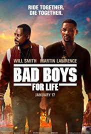

PG-18/Action, Thriller
showing at:
Miami detectives Mike Lowrey and Marcus Burnett must face off against a mother-and-son pair of drug lords who wreak vengeful havoc on their city.
Directed by
Adil El Arbi ... (as Adil)
Bilall Fallah ... (as Bilall)Writing Credits
Peter Craig ... (story by) and
Joe Carnahan ... (story by)
Chris Bremner ... (screenplay by) and
Peter Craig ... (screenplay by) and
Joe Carnahan ... (screenplay by)
ACTORS
George Gallo ... (based on characters created by)Cast
Will Smith Will Smith ... Mike
Vanessa Hudgens Vanessa Hudgens ... Kelly
Alexander Ludwig Alexander Ludwig ... Dorn
Charles Melton Charles Melton ... Rafe
Paola Nuñez Paola Nuñez ... Rita (as Paola Nunez)
Kate del Castillo Kate del Castillo ... Isabel Aretas
Nicky Jam Nicky Jam ... Zway-Lo
Joe Pantoliano Joe Pantoliano ... Captain Howard
Jacob Scipio Jacob Scipio ... Armando Aretas
Theresa Randle Theresa Randle ... Theresa
DJ Khaled DJ Khaled ... Manny (as Khaled [DJ Khaled] Khaled)
Happy Anderson Happy Anderson ... Jenkins
Bianca Bethune Bianca Bethune ... Megan
Dennis Greene Dennis Greene ... Reggie (as Dennis McDonald)
Michael Bay Michael Bay ... Wedding MC
Gissette Valentin Gissette Valentin ... Mexican Female Prison Guard
Rose Bianco Rose Bianco ... Abuela
Edelia Merida Edelia Merida ... Abuela
Jasmin Lawrence Jasmin Lawrence ... Gorgeous Door Woman
Shacai O'Neal Shacai O'Neal ... Gorgeous Door Woman
Carlos Guerrero Carlos Guerrero ... Javier
Massi Furlan Massi Furlan ... Terry Taglin
Chick Bernhard Chick Bernhard ... Judge Sorenson
Jennifer Badger Jennifer Badger ... Julie Weber
Jeff J.J. Authors Jeff J.J. Authors ... Felix the Forensics Guy (as Jeff Authors)
Keith Wheeler Keith Wheeler ... Pastor at Wedding
Brandi Cohen Brandi Cohen ... Receptionist
Jay Amor Jay Amor ... Rodrigo Vargas
Yessenia Hernandez Yessenia Hernandez ... Pool Party Waitress
Anthony Molinari Anthony Molinari ... Salesman
Ivo Nandi Ivo Nandi ... Carver Remy
David Shae David Shae ... Disturbed Airline Passenger
Eduardo Rosario Eduardo Rosario ... The Butcher
Rory Markham Rory Markham ... Booker Grassie
Brad Sanders Brad Sanders ... Police Chaplain
Damien Butler Damien Butler ... Lt. Butler
Bilall Fallah Bilall Fallah ... Fael
Norma Alvarez Norma Alvarez ... Javier's Wife
Adil El Arbi Adil El Arbi ... Rideshare Driver
Christina Christensen Christina Christensen ... Female Basketball Referee
Nahima Bicelis Nahima Bicelis ... Female Cop on Radio (voice)
Erroll Castrillo Erroll Castrillo ... Police Boat Cop on Radio (voice)
Kial Butler Kial Butler ... Skipping Stunt Cop on Radio (voice)
Sharon Pfeiffer Sharon Pfeiffer ... Tour Bus Guide
Porshia C. Joseph Porshia C. Joseph ... Wedding Singer
Ellison Kendrick Ellison Kendrick ... Wedding Singer
Athena Akers Athena Akers ... Poi Performer (uncredited)
Adrian De Armas Adrian De Armas ... Miami Tourist (uncredited)
Erica Askew Erica Askew ... Miami Beach Goer (uncredited)
McDaniel Austin McDaniel Austin ... Detective (uncredited)
Misty Autery Misty Autery ... Wedding Guest (uncredited)
James William Ballard James William Ballard ... Police Officer (uncredited)
Sidnei Barboza Sidnei Barboza ... Tommy Bahama (uncredited)
Lyra Barillas Lyra Barillas ... Hot Miami Model (uncredited)
Roderick Bell Roderick Bell ... Police Officer (uncredited)
Lluvia Bermudez Lluvia Bermudez ... Prison Guard (uncredited)
Alex Bernadotte Alex Bernadotte ... Police Officer (uncredited)
Rosie Bernhard Rosie Bernhard ... Soccer Mom (uncredited)
Daniel Sergio Bertot Daniel Sergio Bertot ... Pedestrian (uncredited)
Krystel Blot Krystel Blot ... Pedestrian (uncredited)
Eric Bodden Eric Bodden ... Zwaylo Boy (uncredited)
Austin Bollinger Austin Bollinger ... Police Officer (uncredited)
Troy Brenna Troy Brenna ... Aretas Thug (uncredited)
Sergio Briones Sergio Briones ... Police Officer (uncredited)
Landon Brooks Landon Brooks ... Doctor (uncredited)
Ruben E. A. Brown Ruben E. A. Brown ... South Beach Patron (uncredited)
Lauren Buglioli Lauren Buglioli ... Reporter (uncredited)
Tom Bui Tom Bui ... Detective Austin (uncredited)
Matthew Byrge Matthew Byrge ... High Ranking Police Officer (uncredited)
Kerwood Canel Kerwood Canel ... Pedestrian / Precision Driver (uncredited)
Santos Caraballo Santos Caraballo ... Tommy Bahama Type (uncredited)
Matthew Carter Matthew Carter ... Club King (uncredited)
Ryan Castle Ryan Castle ... Detective (uncredited)
Damian Costello Damian Costello ... Club Guy (uncredited)
Cowboy Cowboy ... Police Officer (uncredited)
Joe Crosson Joe Crosson ... Police Officer (uncredited)
Ellen Marguerite Cullivan Ellen Marguerite Cullivan ... Wedding Guest (uncredited)
Karel Curras Karel Curras ... Police Officer (uncredited)
Taina Dominguez Taina Dominguez ... Bridesmaid (uncredited)
Asjah Ferguson Asjah Ferguson ... Club Player (uncredited)
José Alfredo Fernandez José Alfredo Fernandez ... Cartel Member (uncredited)
Darin Ferraro Darin Ferraro ... Spa Attendant (uncredited)
Frenchi Firecracker Frenchi Firecracker ... Police Officer (uncredited)
Aaron R Freckleton Aaron R Freckleton ... Pedestrian (uncredited)
Alex Gailey Alex Gailey ... Miami Pedestrian (uncredited)
Fred Galle Fred Galle ... Distinguished Gentleman (uncredited)
John Gettier John Gettier ... Detective (uncredited)
Joseph Giambrone Joseph Giambrone ... Tourist on Bus (uncredited)
Derrick Gilbert Derrick Gilbert ... Kid (uncredited)
Jenin Gonzalez Jenin Gonzalez ... Valet Precision Driver (uncredited)
Wil Gonzalez Wil Gonzalez ... Cartel Member (uncredited)
John C. Gregory John C. Gregory ... Patron (uncredited)
Alex Guevara Alex Guevara ... Taxi Driver México (uncredited
)Yasmine Habib Yasmine Habib ... Masseuse (uncredited)
William Haithco III William Haithco III ... Police Officer (uncredited)
Steve Heinz Steve Heinz ... High End Mall Pedestrian (uncredited)
Monica Henry Monica Henry ... Police officer (uncredited)
Maxwell Highsmith Maxwell Highsmith ... Wedding Friend (uncredited)
Elvia Hill Elvia Hill ... Police Officer (uncredited)
Ariel Hines Ariel Hines ... Court House Spectator (uncredited)
Miguel Insignares Miguel Insignares ... Cartel (uncredited)
Savanna James Savanna James ... Lawyer (uncredited)
Cal Johnson Cal Johnson ... Lyft Driver (uncredited)
J. Tysun Jordan J. Tysun Jordan ... Pedestrian (uncredited)
Onur Can Karatas Onur Can Karatas ... Detective (uncredited)
Julia Kay Julia Kay ... Mall Visitor / Pedestrian (uncredited)
Melissa Kennemore Melissa Kennemore ... Major Patel Miami PD (uncredited)
Jamil Khan Jamil Khan ... Zwaylo Boy (uncredited)
Tony Kim Tony Kim ... Club Guy (uncredited)
Josue Louis-Charles Josue Louis-Charles ... Beach Goer (uncredited)
Roy Luke Roy Luke ... Police Officer (uncredited)
Arami Malaisé Arami Malaisé ... Spectator (uncredited)
Hans Marrero Hans Marrero ... Ambulance Guy #1 (uncredited)
David L. Marston David L. Marston ... Police Officer (uncredited)
Eneida Mascetti Eneida Mascetti ... Highend Vacationer (uncredited)
Marx Mitchell Marx Mitchell ... Police Officer (uncredited)
Victor Morey Victor Morey ... Pedestrian (uncredited)
Andy Nazario Andy Nazario ... Zwaylo Boy (uncredited)
Sarkis Ninos Sarkis Ninos ... Police Officee (uncredited)
Bradford Norris Bradford Norris ... Police Officer (uncredited)
Kiley Opsal Kiley Opsal ... Callie-Captain (uncredited)
Brandon Parker Brandon Parker ... Police Officer (uncredited)
Ryan L. Price Ryan L. Price ... Police Officer (uncredited)
Nick Puya Nick Puya ... Sargeant Normand Harris. (uncredited)
Diezel Ramos Diezel Ramos ... Police Officer (uncredited)
Scott Rapp Scott Rapp ... Detective (uncredited)
Ashae Reagan Ashae Reagan ... Bikini Girl (uncredited)
Felicia M. Reyes Felicia M. Reyes ... Mexican Prisoner (uncredited)
Manuel Rivera Manuel Rivera ... Airplane Passenger (uncredited)
Marlene Rivera Marlene Rivera ... Airline Passenger (uncredited)
Melissa Rodriguez Melissa Rodriguez ... Beach Goer (uncredited)
Ariel Rosario Ariel Rosario ... Spectator (uncredited)
Luis Saldias Luis Saldias ... Clubber (uncredited)
Dominique Saunders Dominique Saunders ... Clubber (uncredited)
London Seabreeze London Seabreeze ... Sexy Model (uncredited)
Patrice Sepulveda Patrice Sepulveda ... South Beach Restaurant Pedestrian Couple (uncredited)
Jonathan Sienkiewicz Jonathan Sienkiewicz ... Store Shopper (uncredited)
Max Soliz Max Soliz ... Airline Passenger (uncredited)
Pedro Tavarez Jr. Pedro Tavarez Jr. ... Mall Shopper (uncredited)
Lindsey Thaxton Lindsey Thaxton ... Detective Rodriquez (uncredited)
Brandon Michael Thomas Brandon Michael Thomas ... Police Officer (uncredited)
Robert Tinsley Robert Tinsley ... Uniformed Police Officer (uncredited)
Emily Towles Emily Towles ... Hot Miami Model (uncredited)
Asa Rodger Turner Asa Rodger Turner ... Pedestrian / Mall Employee (uncredited)
Iliana Tzikas Iliana Tzikas ... Spectator (uncredited)
Carlos Valentino Carlos Valentino ... Detective (uncredited)
Joseph Velez Joseph Velez ... Detective (uncredited)
Jennifer Vo Jennifer Vo ... Miami Tourist (uncredited)
Mario Vocol Mario Vocol ... Zwaylo Boy 2 (uncredited)
Buddy Watkins Buddy Watkins ... Officer Kittes (uncredited)
John West Jr. John West Jr. ... Chief Harris (uncredited)
Maria Z. Wilson Maria Z. Wilson ... Police Officer (uncredited)
Thaddeus Wilson Thaddeus Wilson ... DJ (uncredited)
Jamil C. Winston Jamil C. Winston ... Police Officer (uncredited)